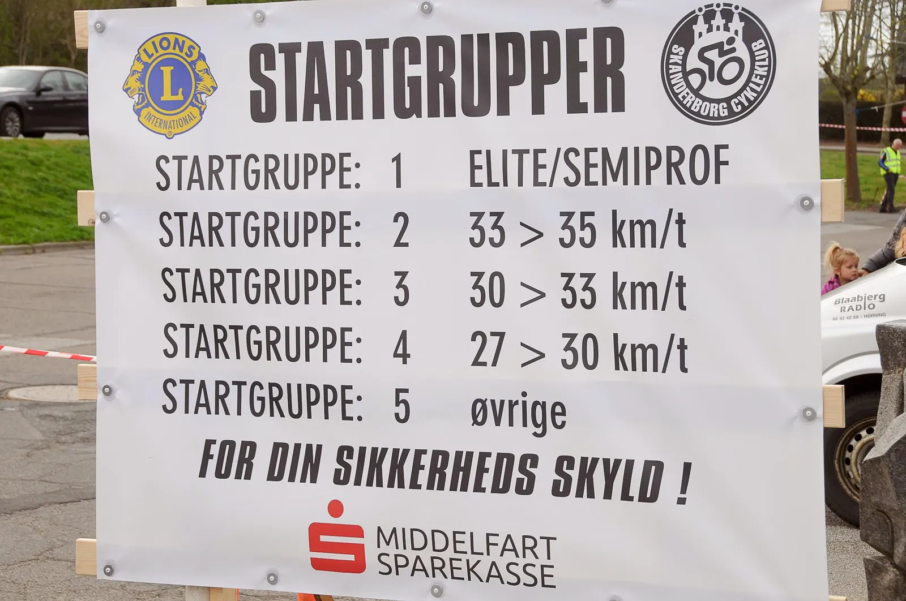
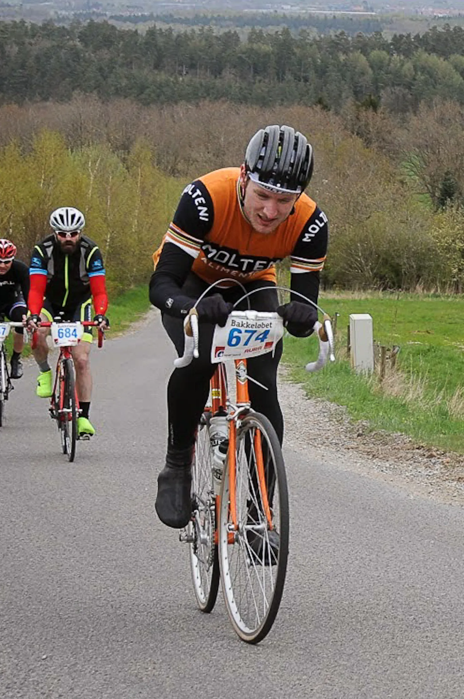
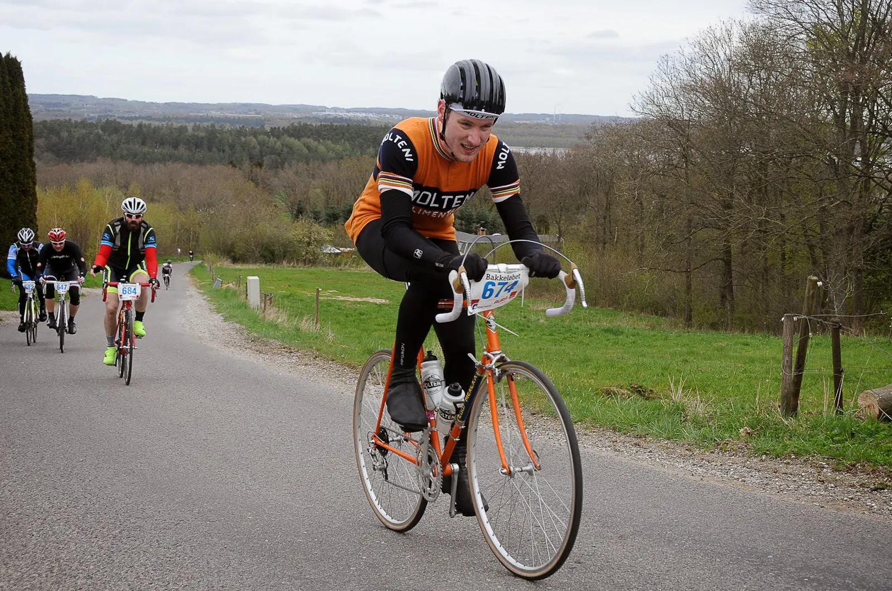
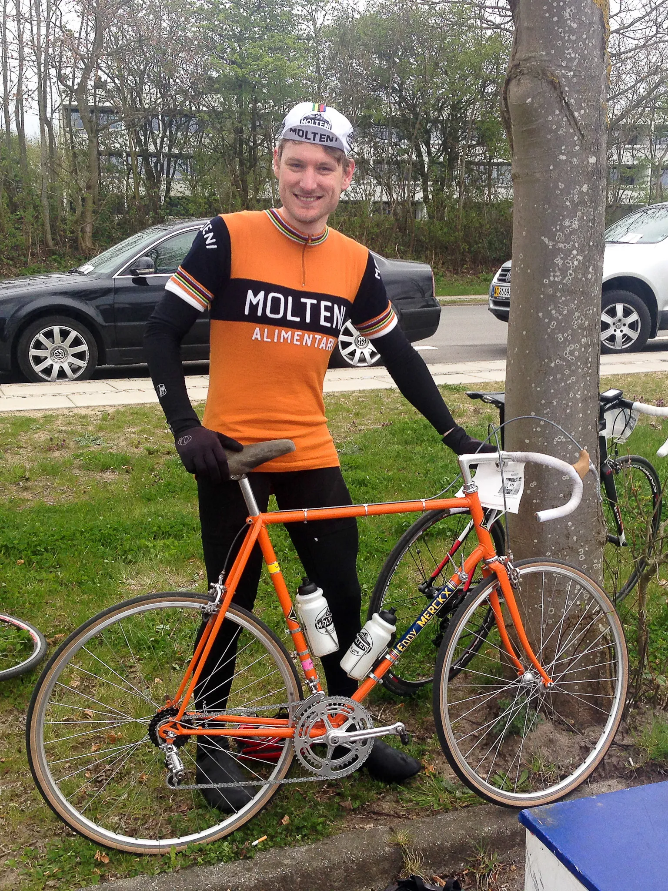

Bakkeløbet Hørning 2015: Højdetræning i det østjyske

Bakkeløbet Hørning 2015 rundt i Skanderborg er ikke højt prioriteret på Squadra Molteni i denne sæson. Faktisk er den slet ikke med på sæsonplanen. Men det betyder ikke, at holdet bliver væk.
Derfor ville det også være naturligt, hvis arrangørerne var overraskede over at se holdet eftertilmelde sig på dagen.
Det var da også blot en enkelt rytter fra Squadra Molteni til start, Kasper Sørensen.
Kasper var mærket allerede inden Bakkeløbet Hørning 2015
Kasper er vel og mærke en rytter, som i går led så meget på Nordfyns sparsomme bakker, at han var ude af stand til at hjælpe sin holdkammerat, Niels Bjørnsteen, i finalen.
– Jeg ved at Michael Valgren på eget initiativ, tager på højdetræning. Det var tydeligt i går, at jeg simpelthen er for dårlig på bakkerne, jeg kunne ikke være dér for holdet i finalen, det må jeg tage konsekvensen af. Derfor tager jeg også på eget initiativ til Bakkeløbet, siger Kasper Sørensen.
700 højdemeter over Yding Skovhøj og Bjergvej
Kasper kørte 80 kilometer-ruten med 700 højdemeter, som bl.a. førte rytterne over Yding Skovhøj.
Kasper startede i anden gruppe, som annonceret ville køre med 33-35 km./t.

Det viste sig dog hurtigt, at kun få ryttere var i stand til at køre med 35 km./t. i snit.
– De blev hurtigt trætte af at stege ude foran, og efter de første bakker, fik vi samlet en fin gruppe på 30 mand, fortæller Kasper.
Brugte smart fif fra Peter Meinert
Som ventet havde Kasper det svært på bakkerne, men som en af de yngre medlemmer af Squadra Molteni, har han opsnappet et fif fra de lidt mere erfarne ryttere på holdet.




Specielt et enkelt trick, som en af hans holdkammerater har benyttet sig af, kopierede Kasper i dagens løb.
– Jeg har fået fortalt hvordan min holdkammerat, Peter Meinert, kørte frem i feltet før en stigning, så han havde et forspring at tære af. Det samme gjorde jeg i dag. Det sparede lidt på kræfterne, og så havde jeg overskud til at køre gruppen ind igen efter bakken, sagde Kasper efter løbet.
Det lykkedes et langt stykke hen i løbet indtil løbets sidste alvorlige stigning, Bjergvej.
Her faldt Kasper for langt tilbage, og efter at have jagtet i fem kilometer, måtte han se frontgruppen, der nu var nede på 10-15 mand, sejle væk.
Sluttede i top 20 – Cirka
Han lod sig falde tilbage til tre andre ryttere, som var skilt fra på et tidligere tidspunkt, og kørte hjem til en placering som nummer 45 ud af de 250 startende.

– Dagen i går sad stadig i benene, og jeg måtte slippe til sidst.
Kasper slutter omkring 15-20 stykker fra hans startgruppe.
– Men jeg er sikker på, at med min kørestil i dag, så varer det ikke længe, før holdcheferne får et sponsoropkald fra en af de helt store spillere i elastikbranchen, smiler Kasper.